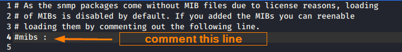

Snmpwalk
Site:
http://www.net-snmp.org/docs/man/snmpwalk.htmlSnmpwalk
is part of the Net-SNMP suite:
http://www.net-snmp.org/When the
SNMP Manager queries the SNMP agent, data is taken from the MIB and sent to the SNMP Manager where it can be viewed
with a network monitoring tool. There are many different commands that you can use to query an SNMP agent. The most
common ways are through the use of the GET or the GET-Next command. The GET command is used to take an Object
Identifier (OID) from the MIB. The GET-Next command is a little more advanced and goes through a MIB tree from OID
to OID pulling information. This is where snmpwalk comes in.
snmpwalk is the name given to an
SNMP application that runs multiple GETNEXT requests automatically. The SNMP GETNEXT request is used to query an
enabled device and take SNMP data from a device. The snmpwalk command is used because it allows the user to chain
GETNEXT requests together without having to enter unique commands for each and every OID or node within a
sub-tree
How snmpwalk work
snmpwalk is an SNMP application that uses SNMP GETNEXT operation requests to query a
network entity for a tree of information.
• If an object identifier (OID) is given, all variables in the
subtree below the given OID are queried and their values presented to the user.
• If no OID argument is
present, snmpwalk will search the subtree rooted at SNMPv2-SMI::mib-2 (including any MIB object values from other
MIB modules, that are defined as lying within this subtree). If the network entity has an error processing the
request packet, an error packet will be returned and a message will be shown, helping to pinpoint why the request
was malformed.
• If the tree search causes attempts to search beyond the end of the MIB, the message "End
of MIB" will be displayed
ERRORS:If the output returns the OID numerically, leke the following
one:
iso.3.6.1.2.1.1.1.0 = STRING: "Hardware: Intel64 Family..."1.be
sure to have installed the snmp-mibs-downloader package
apt-get update
apt install snmp-mibs-downloader
2. comment the fourth line in the file /etc/snmp/snmp.conf
gedit /etc/snmp/snmp.conf
bibliography:
https://www.comparitech.com/net-admin/snmpwalk-examples-windows-linux/